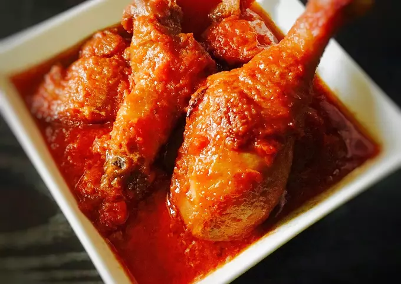

Stew

African chicken Stew
Ingredients
- Chilli
- Tomatoes
- Onion
- Vegetable Oil
- Bell Pepper
- Ginger
- Chicken
- Knorr cubes
- Curry
- Thyme
- Water
- Seasoning powder
- salt
- Tomatoe Paste
Steps
- Boil the chicken with added curry, knorr cubes, salt.
- Add some water to blender and; Blend the tomatoes, onions, chilli, bell pepper, ginger.(Dice some onions and set aside)
- Boil the blended mixture(pepper mix) till most of the water dissapears and the mix is thick.
- When chicken is boiled(try not to let the chicken get too soft), separate the chicken from the Chicken stock(boiled chicken water) and set aside.
- Fry the chicken with the Vegetable oil or you can airfry your chicken and set aside.
- By now your pepper mix should be thick and should have less water,set it aside.
- In a separate pot, pour some vegetable oil, then add your diced onions,let it fry a little bit, then add some tomatoe Paste,stir fry till you see it has some bubbles
- Add the pepper mix and also stir fry for about 5 minutes.
- Add the seasoning powder, curry, thyme,knorr cubes, salt.
- Stir fry for about a minute and then let it fry for about 2 minutes.
- Add the chicken stock and let the stew boil for about 5 minutes.
- Then add the fried chicken to the stew and let it boil for another 3 minutes and voila you have a delicious stew.
Nigerian chicken stew is the major meal that people eat in nigeria regardless of the tribe